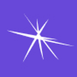

VISTNYSE (ADS) · BMV (VISTA) · BYMA (CEDEAR) · Vista Energy, S.A.B. de C.V.
Fair value por ADS (blend propio)
USD 69.61
vs. USD 49.61 mercado · +40.3%
CEDEAR ARS 29,980 · ratio 3:1 · CCL implícito 1,813 · cierre 24-nov-2026
POSTURA DEL ANÁLISIS: CONSTRUCTIVA, CON CRUDO Y RIESGO PAÍS ALTOS — el precio descuenta ~1,282 pb de riesgo país de forma permanente, contra 1,035 pb de mercado (promedio de 90 días: 663 pb), o un Brent de largo plazo de ~USD 61 con el riesgo país del escenario Base. El riesgo propio a vigilar es la evacuación: sin VMOS a tiempo, el crecimiento comprometido no tiene por dónde salir.
Este documento es análisis independiente con fines informativos y educativos. El autor no es un asesor financiero registrado (no CFA / no matriculado ante la CNV/SEC) y este contenido no constituye una recomendación de compra, venta o mantenimiento para ningún lector en particular. Ver disclosure completo al pie.
Productor de shale oil puro en Vaca Muerta · mayor productor independiente de petróleo de Argentina · Bajada del Palo Oeste y Este (100%), La Amarga Chica (50%), Bandurria Sur (25.1%), Bajo del Toro (35%) · sociedad mexicana (S.A.B. de C.V.) que reporta en dólares · socia de VMOS (9.09%)
Vista produjo 169 mil barriles equivalentes diarios en el tercer trimestre de 2026 (+33% interanual, 87%
petróleo), con un costo de extracción de USD 4.7 por barril, un EBITDA ajustado de USD 841.5 millones (68% de
margen) y el 73% del crudo exportado. Ocho semanas después el ADS vale USD 49.61, 24% menos que el 30 de
septiembre: en noviembre el Brent cayó 25% y el riesgo país pasó de ~790 a 1,035 puntos. A ese precio, la
empresa vale 2.85 veces el EBITDA de 2027 del escenario Base. La pregunta del informe es la misma que para
YPF, su par más directo: qué Argentina y qué crudo compra quien paga USD 49.61. La respuesta del modelo: ~1,280
puntos básicos de riesgo país para siempre, o un Brent de ~61 dólares. Las dos cosas son peores que el mercado,
pero menos que lo que descuenta YPF.
EV / EBITDA 2027 (Brent 70-76)
2.85x
Exportación / ingresos netos
72%
Deuda neta / EBITDA pro forma
1.04x
Lifting cost 3T26
USD 4.7/boe
01 — Resumen Ejecutivo
El shale más barato de Vaca Muerta a 2.85 veces el EBITDA: el precio descuenta un riesgo país de ~1,280 pb o un Brent de USD 61
La tesis en una frase: Vista es una exportadora de petróleo con costos de primer nivel y un plan
de crecimiento que ya tiene caño reservado; a USD 49.61 el mercado le cobra un riesgo país de ~1,280 puntos
básicos para siempre, menos que a YPF porque exporta y no tiene precios regulados, pero más que lo que marca el
EMBI.
El 3T26 dejó una producción récord de 169,023 boe/d (petróleo 147,126 bbl/d), ingresos de USD 1,234 millones
(+75% interanual), un EBITDA ajustado de USD 841.5 millones y un flujo libre de USD 334 millones. El 100% del
crudo se vendió a paridad de exportación (USD 84.2 por barril realizado con un Brent de 91.3) y el 72% de los
ingresos netos fueron exportaciones. En dos años Vista compró la mitad de La Amarga Chica a Petronas (2025) y la
participación de Equinor en Bandurria Sur y Bajo del Toro (mayo de 2026), y su producción pasó de 127 mil boe/d en el
3T25 a 169 mil. Para 2027 guía 185 mil boe/d y USD 3,300 millones de EBITDA con un Brent de 80.
El fair value de cinco métodos es USD 69.61 por ADS (+40.3%). El DCF de nueve combinaciones de
país y crudo da USD 84.90 y la reversión del EV/EBITDA condicionada al riesgo país, USD 85.04. El NAV de reservas
(USD 39.12) y los comparables ajustados por país (USD 37.40) quedan por debajo del precio. El consenso de nueve
casas está en USD 90.08, casi todo anterior a noviembre.
Manteniendo el resto del caso Base, el precio de USD 49.61 solo se justifica con un riesgo país constante
de 1,282 puntos básicos, o con el riesgo país del Base y un Brent de largo plazo de USD 61.1. Comparado
con YPF (1,476 pb y USD 56.9), el mercado le cobra a Vista menos riesgo argentino y le exige más crudo: es
exactamente la diferencia entre una exportadora pura y una integrada con surtidores. El riesgo propio de Vista
no es el precio interno sino el físico: que el crecimiento comprometido tenga caño a tiempo.
02 — Historia: cómo sobrevivió a Argentina
De vehículo de adquisición en México a mayor productor independiente: nueve años, dos crisis y cuatro compras
Vista nació en 2017 como un vehículo de adquisición cotizado en la Bolsa Mexicana, fundado por Miguel Galuccio,
que había sido CEO de YPF entre 2012 y 2016. En 2018 compró sus primeros activos en Neuquén a Pampa Energía y
Pluspetrol, entre ellos Bajada del Palo, que en 2026 sigue siendo su corazón productivo. En julio de 2019 empezó a cotizar en
Nueva York con ADS (1 ADS = 1 acción Serie A). Nunca pagó dividendos: toda su historia es de reinversión, y desde
2025 de recompras.
ADS de VIST (USD) a cada cierre de trimestre, sep-2019 → sep-2026, más el 24-nov-2026, contra el riesgo país EMBI invertido. Fuentes: Yahoo Finance, argentinadatos (EMBI JP Morgan).
Vista es la acción argentina que más subió desde la pandemia: de USD 2.00 en marzo de 2020 a USD 75.47 en marzo
de 2026 (37 veces), con el EMBI de 3,803 a 617. A diferencia de YPF, su máximo no coincidió con el mínimo del
riesgo país (426 pb, jun-26) sino con el pico del Brent de marzo de 2026: la acción sigue al crudo más que la de
su par integrado.
03 — Modelo de Negocio y Mapa de Exposición
Un solo negocio: sacar petróleo de Vaca Muerta a USD 4.7 por barril y venderlo a precio de exportación
Vista es una E&P pura: no refina ni vende combustibles. Opera Bajada del Palo Oeste y Este y Aguada Federal
(93 mil boe/d operados) y tiene participaciones no operadas en La Amarga Chica, Bandurria Sur y Bajo del Toro,
las tres operadas por YPF (76 mil boe/d). El 96.8% de los ingresos netos es petróleo. Vende a través de su trading
propio (VEISA, desde el 4T25) y tiene capacidad firme en Duplicar Plus y 50 mil barriles diarios reservados en
VMOS. La sociedad es mexicana (S.A.B. de C.V., cotiza en la BMV y en NYSE) y reporta en dólares, pero el 100% de
sus activos productivos está en Argentina.
Producción neta del 3T 2026 por bloque, en miles de boe por día (total 169.0). Fuente: 6-K del 28-oct-2026.
Mapa de exposición: ingresos netos del 3T 2026 (USD 1,183.9 M) por destino y tipo de precio, en %. Fuente: 6-K del 28-oct-2026.
Lectura del mapa: el 97% de los ingresos se cobra en dólares a paridad de exportación (72% exportado, 25%
vendido en el país al mismo precio de referencia). Solo el gas (3%) tiene precio local, y una parte es Plan
GasAr. Vista no tiene surtidores que el gobierno pueda congelar: su exposición a un control de precios es al
precio interno del crudo (el "barril criollo" de 2020-22) y a los derechos de exportación (4.1% de los ingresos en
el 3T26). Por eso este informe le asigna una exposición al riesgo país (λ) de 0.65, menor que la de YPF (0.8)
(Sección 13).
04 — Desarrollos Recientes y Contexto Macro
Noviembre de 2026: el ADS −24% desde septiembre, contra el trimestre de mayor producción de su historia
El trimestre. La producción subió 8% contra el 2T26: 13% de crecimiento orgánico interanual (91
pozos conectados en doce meses, a un ritmo de 100 por año) y el primer trimestre completo con Bandurria Sur y Bajo
del Toro consolidados. El costo de extracción subió a USD 4.7/boe (+6% interanual) por la inflación en pesos con
un tipo de cambio quieto; el costo de venta bajó 14% porque el ship-or-pay de Duplicar se diluye con más volumen.
El resultado neto fue de USD 293.5 M (EPS 2.65); ajustado, USD 240.1 M. En octubre cerró la cesión de su 1.5% en
Acambuco a Pan American.
Noviembre. El Brent cayó 25% en el mes y el riesgo país subió de ~790 a 1,035 puntos. Goldman
Sachs bajó su precio objetivo de USD 81.50 a 69.70 el 10-nov por mayor costo de capital (múltiplo de 3.8x a 3.4x)
y mantuvo la recomendación. Vista siguió recomprando acciones durante todo el mes (6-K del 9 al 24 de noviembre).
Regulación. Vista pidió el ingreso de un proyecto upstream al RIGI (Bandurria Norte, 100%), que
está en revisión. Con el Decreto 105/2026 el RIGI da estabilidad fiscal y exención de derechos de exportación
después de 3 años: para una exportadora como Vista, es la regulación que más mueve el valor.
05 — Estados Financieros en USD
Ingresos +75% y EBITDA +78% en un año: la mitad orgánico, la mitad comprado
Del resultado reportado al ajustado (3T26). Resultado neto USD 293.5 M + impuesto 211.8 +
resultado financiero 76.1 − asociadas 3.1 = resultado operativo 578.2; + DD&A 283.6, − reversión de
reestructuración 18.2, + costos no monetarios del traspaso de convencionales 2.8, + remedición del pago
contingente a Equinor 16.2, − ganancia por venta de activos 21.1 = EBITDA ajustado USD 841.5 M.
El resultado neto ajustado (USD 240.1 M) además saca el impuesto diferido. En el 3T25 el resultado reportado
incluía una ganancia de USD 288.1 M por la compra de La Amarga Chica, que no se repite.
Ingresos y EBITDA de los últimos doce meses a cada cierre de trimestre, 4T23 → 3T26, en millones de USD (cifras reportadas consolidadas). Fuente: estados de Vista vía stockanalysis.com; Vista reporta en dólares, así que la serie no tiene distorsión cambiaria.
06 — Deuda, Balance y Descalce de Monedas
Ingresos en dólares de exportación, deuda en dólares a largo plazo: el descalce está en el tiempo, no en la moneda
Perfil de vencimientos de la deuda financiera al 30-sep-2026, en millones de USD (sin arrendamientos). Fuente: estados financieros de Vista, nota de préstamos.
ON contra soberano. Las dos emisiones grandes de Vista en ley Nueva York se colocaron con
spreads de ~360-400 pb sobre el Treasury: la ON XXXI (USD 500 M, 2038) al 7.88% en abril de 2026, con el EMBI en
527 (0.68 veces el spread soberano), y la ON XXIX (USD 900 M, 2033) al 8.50% en junio de 2025, con el EMBI en 655
(0.62 veces). El modelo usa Kd = Treasury + 0.65 × riesgo país. No se encontró la TIR de las ON después del salto
de noviembre.
07 — Flujo de Caja, Recompras y Acceso a Divisas
Nunca pagó dividendos: recompra acciones y reinvierte el resto en pozos y compras
En el 3T26 el flujo operativo fue de USD 772.8 M y la inversión de USD 438.7 M, con un flujo libre de USD 334.2
M. Con eso pagó USD 60.4 M de deuda neta, USD 23.6 M de intereses y USD 55.4 M de recompras. La asamblea del
28-abr-2026 sumó USD 150 M a la reserva para recompras (USD 329.3 M en total) y en noviembre siguió comprando a
través de Citi México: al 24-nov tiene 2,014,351 acciones en tesorería y 110,287,402 en circulación. Al precio
actual, el flujo libre de 2027 del Base (USD 422 M) es un rendimiento de 7.7% sobre la capitalización.
Acceso a divisas. Vista cobra el 72% de sus ingresos afuera, a través de su trading, y es una
holding mexicana: los dólares de las exportaciones de su subsidiaria argentina están sujetos a la regulación
cambiaria local (liquidación de exportaciones y giro de utilidades). La Com. "A" 8226 del BCRA (14-abr-2025)
permite girar dividendos de ejercicios iniciados desde 2025. Para el tenedor del ADS no hay dividendo que girar:
la devolución de capital es por recompra, con precio en dólares en Nueva York y en pesos mexicanos en la BMV.
08 — Comparables: Locales, Latam y EE.UU.
El par más directo es YPF; contra el shale de EE.UU., Vista cotiza a 60% del múltiplo con mejores costos
EV/EBITDA de los últimos doce meses, 24-nov-2026. Fuentes: Yahoo Finance, 6-K de Vista y YPF; cálculos propios.
Por qué el descuento. Con el riesgo país de largo plazo del Base (793 pb) y λ = 0.65, el Ke de
Vista es 13.5% contra ~8.3% de un productor de EE.UU. con la misma beta. Llevado a Argentina con Gordon, el
múltiplo justo queda en ~2.9x, contra 3.04x pro forma de mercado. Vista vs. YPF: Vista cotiza
más cara por EBITDA (3.04x contra 2.34x) y más barata por barril de reserva (11.6 contra 14.9). El mercado le paga
a Vista el crecimiento y el precio de exportación; a YPF le cobra los surtidores y el accionista de control.
09 — Gobierno Corporativo y Estructura Accionaria
Sin controlante: el fundador tiene ~8%, y Petronas y Equinor cobraron parte de sus ventas en acciones
Miguel Galuccio
~7.9%
Fundador, presidente y CEO; ex CEO de YPF (2012-2016). Participación según Bloomberg Línea (fecha no publicada)
Petronas
~6.6%
7,297,507 acciones recibidas por La Amarga Chica (abr-2025)
Equinor
~5.6%
6,223,220 ADS recibidos por Bandurria Sur y Bajo del Toro (may-2026), con lock-up
Acciones en circulación
110.3 M
2.0 M en tesorería por recompras (24-nov-2026)
Capitalización
USD 5,471 M
EV USD 8,329 M
Listados
NYSE · BMV · BYMA
ADS 1:1; CEDEAR 3:1 en BYMA; S.A.B. de C.V. (México)
Historia con el minoritario. Sin controlante ni Estado en el capital: el riesgo de gobierno
corporativo es el opuesto al de YPF. Lo que hay que mirar es la dilución por compras pagadas con acciones (13.5 M
de acciones nuevas entre 2025 y 2026, ~12% del capital), compensada en parte por recompras (USD 55.4 M en 9M26).
El management tiene planes de acciones (USD 21 M de pagos basados en acciones en el 3T26). Partes relacionadas:
YPF es operadora de La Amarga Chica, Bandurria Sur y Bajo del Toro, y socia en VMOS: Vista depende de su par para
~44% de su producción.
10 — Registro de Riesgos
Riesgos en capas, cada uno con el episodio argentino que lo ancla
11 — Catalizadores
Agenda de eventos que pueden mover la acción
12 — Modelo Proyectado y Consenso
Nueve casas ven entre USD 69.70 y USD 107; solo Goldman actualizó después de noviembre
13 — Valuación: 6 Métodos y Fair Value
Cuánto vale en dólares, en qué Argentina, con qué crudo, y qué descuenta el precio
Costo de capital y por qué λ = 0.65 (y no la de YPF)
Ke en USD = Treasury 10Y (4.90%) + beta × prima de mercado maduro (4.23%) + λ × riesgo país. Beta: E&P de
EE.UU. (0.56 desapalancada, Damodaran ene-2026), reapalancada con la estructura de Vista (deuda / capitalización
0.67) → 0.80. La pregunta del λ, explícita:
Conclusión: λ = 0.65. El argumento de negocio (exportadora, sin surtidores, sin el Estado en el
capital) baja el λ de Vista respecto del 0.8 de YPF. Lo que el mercado de ON dice es otra cosa: el bonista le
cobra a YPF menos que a Vista, probablemente por tamaño, liquidez y la percepción de que el Estado no dejaría caer
a su petrolera. Para el accionista, que no tiene esa red, pesa más el negocio. Se elige 0.65 y no el piso de 0.5
porque las ON no muestran que Vista esté "afuera" del riesgo argentino. El costo de la deuda sigue al riesgo país
con el ratio de sus propias ON (0.65); WACC con 40% de deuda a valor de mercado.
Método 1 — DCF en USD con senda de riesgo país (15%)
Base/Base: EBITDA de USD 2,919 M en 2027 (Brent 75.7) a USD 3,278 M en 2031; flujo libre de USD 422 M a 1,046 M;
a perpetuidad, capex de mantenimiento de USD 13 por boe. El 80% del valor viene del terminal. Esperado de nueve
combinaciones: USD 84.90. Contra YPF, la matriz de Vista es más ancha en el eje del crudo y
menos en el de la macro: de Bear a Bull de crudo con macro Base, Vista va de 55.7 a 124.9 (2.2 veces) e YPF de
41.9 a 78.8 (1.9 veces).
Método 2 — NAV de reservas (15%)
Base/Base, en millones de USD: NAV de los ~627 MMbbl de líquidos probados (1P de dic-2025 más las compras de 2026
estimadas, con declino exponencial, netback a Brent 70 menos descuento, regalías y derechos de exportación y costo
de caja, menos USD 5.2/boe de desarrollo, después de impuestos, al WACC de largo plazo) USD 6,336; gas USD 231
(netback USD 8.1/boe); inventario no reservado (igual a las 1P, arriesgado 25% y con 40% de descuento por demora)
USD 950; más la participación en VMOS y otras a libros, menos deuda neta, pagos diferidos y contingentes (USD 624
M) y minoritarios. Esperado de nueve combinaciones: USD 39.12, debajo del precio: el NAV solo
reconoce 11.7 años de reservas probadas y castiga el inventario que el DCF supone que se repone.
Método 3 — Comparables ajustados por país (20%)
Mismos seis pares que en YPF, cada uno llevado a Argentina con × (Ke par − g) / (Ke AR − g) con λ = 0.65: de
2.59x (Permian Resources) a 3.17x (Petrobras), mediana 2.91x, aplicada al EBITDA de mitad de ciclo de 2027 (USD
2,648 M a Brent 70) → USD 37.40 (rango intercuartil USD 31.04-42.37).
Método 4 — Reversión del EV/EBITDA condicionada al riesgo país (30%)
Con 20 trimestres (4T21 a 3T26), EV/EBITDA = 5.90 − 1.27 × (riesgo país / 1,000), R² 0.55. Medianas por régimen:
5.03x con el EMBI debajo de 800, 4.77x entre 800 y 1,500, 2.63x arriba de 1,500. Evaluada en 793 pb da 4.90x
sobre el EBITDA de mitad de ciclo → USD 85.04. El punto del 24-nov-2026 (1,035 pb, 3.25x sobre
el EBITDA reportado de los últimos doce meses) queda debajo de la recta, que en ese riesgo país marca 4.6x.
EV/EBITDA de VIST (TTM reportado) contra el riesgo país a cada cierre de trimestre, 4T21-3T26. Fuentes: stockanalysis.com (estados en USD de Vista), argentinadatos; cálculos propios.
Método 5 — Consenso (20%)
Promedio de los nueve precios objetivo de la ventana de 90 días: USD 90.08. Ocho de los nueve son anteriores a la caída de noviembre; el único actualizado (Goldman) está en USD 69.70.
Método 6 — Riesgo país y Brent implícitos (no entran al blend)
Con el resto del caso Base, el DCF iguala el precio de USD 49.61 con un riesgo país constante de 1,282
puntos básicos (EMBI 1,035; promedio de 90 días 663), o con el riesgo país del Base y un Brent
de largo plazo de USD 61.1. Comparado con YPF (1,476 pb y USD 56.9): el precio de Vista descuenta menos
castigo argentino y más castigo de crudo, coherente con una exportadora pura.
Blend y fair value
La misma advertencia que en YPF: lo probado (NAV, USD 39.12) y el múltiplo del 24-nov ajustado por país
(comparables, USD 37.40) quedan debajo del precio. El fair value lo empujan el DCF (que supone reposición de
reservas a USD 13 por boe), la reversión y un consenso viejo.
Grilla de sensibilidad: riesgo país de largo plazo × Brent de largo plazo
Football field: rango de cada método (peor → mejor combinación, intercuartil o regímenes), precio de mercado y fair value. Fuente: valuacion.py.
Chequeo de sesgo de la skill. El DCF Base/Base (USD 77.71) queda a 1.57 veces el precio, fuera
del umbral de ±50%, así que se revisó en orden: (1) monedas: todo en USD; (2) riesgo país una sola vez: beta de
E&P de EE.UU. + λ × EMBI, y el Bear recorta volumen y capex sin llevar la producción a cero; (3) tipo de
cambio: no afecta flujos; (4) año base: EBITDA de mitad de ciclo a Brent 70, ~21% menos que el ritmo del 3T26 con
Brent 91; (5) EBITDA limpio de ventas de activos, remedición del pago contingente y reestructuración. La distancia
es un hallazgo que explican el riesgo país implícito (1,282 pb) y el Brent implícito (USD 61). La peor celda de
la matriz (USD 21.38) no es cero.
14 — Limitaciones del Modelo
Qué asume este análisis, y dónde puede fallar
Crudo: es la variable que más mueve a Vista (USD 6 de fair value por cada USD 5 de Brent).
Riesgo país: entre 550 y 1,100 pb el fair value va de USD 75.8 a 63.1. Reservas
adquiridas: Vista no publicó las reservas de Bandurria Sur y Bajo del Toro; se estimaron en ~133 MMboe
con su vida de reservas (14 años). Reposición: el DCF supone que Vista repone producción a USD
13 por boe a perpetuidad; el NAV no. Gas y otros: el EBITDA no petrolero (USD 361 M por año) es
un residuo de calibración contra el 3T26 que incluye coberturas y otros ingresos; en el NAV se usa un netback de
gas explícito (USD 8.1/boe). Serie de múltiplos: 20 trimestres (Vista cotiza en NYSE desde jul-2019
y la serie limpia en USD de stockanalysis arranca en 4T21), con EBITDA reportado y no ajustado; no son 8-10 años.
λ: el mercado de ON no respalda un λ menor que el de YPF; con λ = 0.8 el Ke de largo plazo
del Base subiría ~1.2 puntos y el fair value bajaría. Costo de la deuda: TIR de las ON
posterior a noviembre no encontrada. Tipo de cambio: el CCL implícito del CEDEAR (1,813) solo
traduce el precio local. Accionistas: la participación de Galuccio es de una fuente secundaria
sin fecha. Consenso viejo: ocho de nueve precios objetivo son anteriores a noviembre.
Documento elaborado a partir de fuentes públicas: SEC EDGAR (6-K de Vista Energy del 28-oct-2026 con resultados y
estados financieros del 3T26, 6-K de recompras de noviembre de 2026, 6-K de 2025-2026 sobre La Amarga Chica y
Equinor; 6-K de YPF del 28-oct-2026), api.argentinadatos.com (riesgo país EMBI, CCL, MEP, oficial), Yahoo Finance
(ADS, CEDEAR, futuros de Brent y WTI, comparables, Treasury 10Y), stockanalysis.com (serie trimestral de Vista en
USD), Damodaran Online (ctryprem.xlsx y betas, ene-2026), EIA (STEO nov-2026), Secretaría de Energía (vía El
Economista e iProfesional), Oil & Gas Journal (reservas 2025), Bloomberg Línea, El Cronista, iProfesional, El
Economista, Perfil, LM Neuquén, Ámbito, Rankia y TradingView (ratio del CEDEAR), Cbonds (PEMEX). Cifras
fundamentales al 30-sep-2026; precios, crudo y tipo de cambio al 24-nov-2026; riesgo país al 23-nov-2026.
Contexto compartido y fuentes con fecha en
.claude/skills/informe-argentina/modelos/_compartido/contexto-energia-2026-11.md y
contexto-2026-11.md.
Riesgos específicos: las acciones argentinas tienen riesgo país, cambiario, regulatorio y de
liquidez adicionales a los de una acción de EE.UU.; los valores en USD dependen del tipo de cambio utilizado.
Sobre el autor y la naturaleza de este documento: este informe es un análisis independiente
elaborado por Manfredi Investment Research & Markets con fines exclusivamente informativos y educativos. El
autor no es un asesor de inversión registrado, no está matriculado ante la Comisión Nacional de Valores (CNV), la
SEC, ni ningún otro organismo regulador equivalente, y no mantiene una relación de asesoramiento financiero
personalizado con el lector. Ninguna cifra de este documento —incluido el "fair value" de portada, los escenarios
de valuación, ni la síntesis de la Sección 13— constituye una recomendación de compra, venta o mantenimiento para
ningún lector en particular, ni considera la situación financiera, los objetivos o el perfil de riesgo individual
de quien lo lee. Los escenarios de valuación son estimaciones propias sujetas a los supuestos declarados
explícitamente en la Sección 13, y no representan guidance oficial de ninguna de las compañías mencionadas salvo
donde se cita de forma directa y atribuida. Verificar cifras contra los últimos estados contables presentados ante
la CNV y la SEC, y consultar a un asesor financiero matriculado, antes de tomar cualquier decisión de inversión.